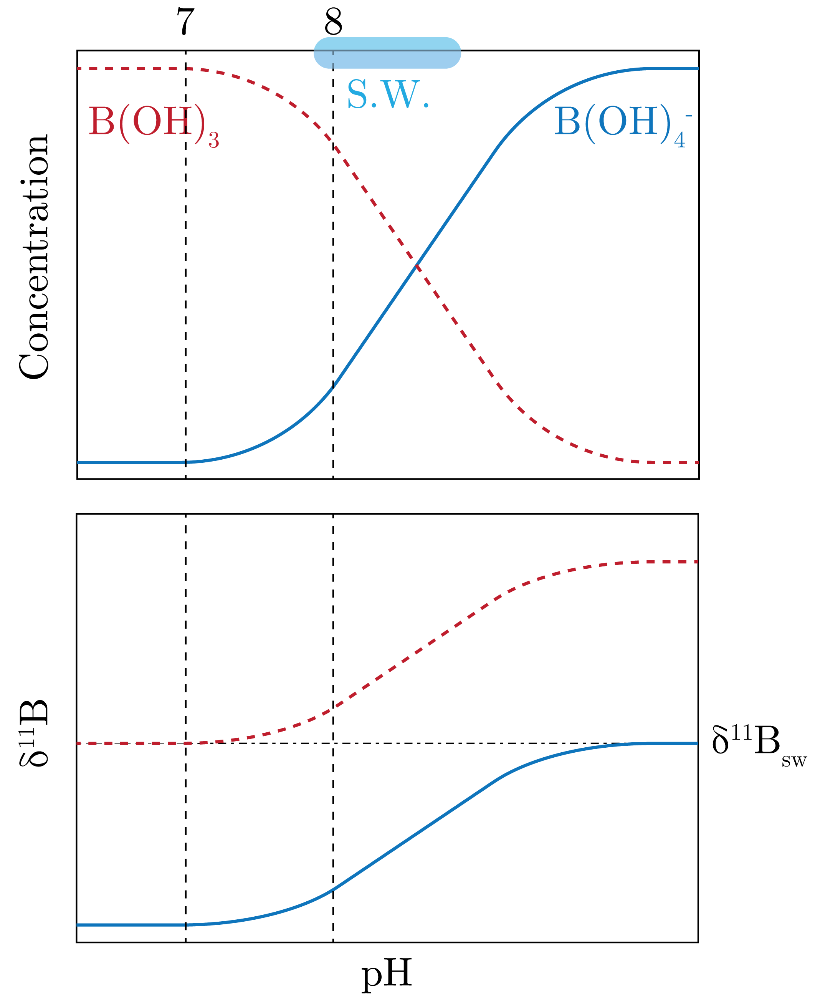
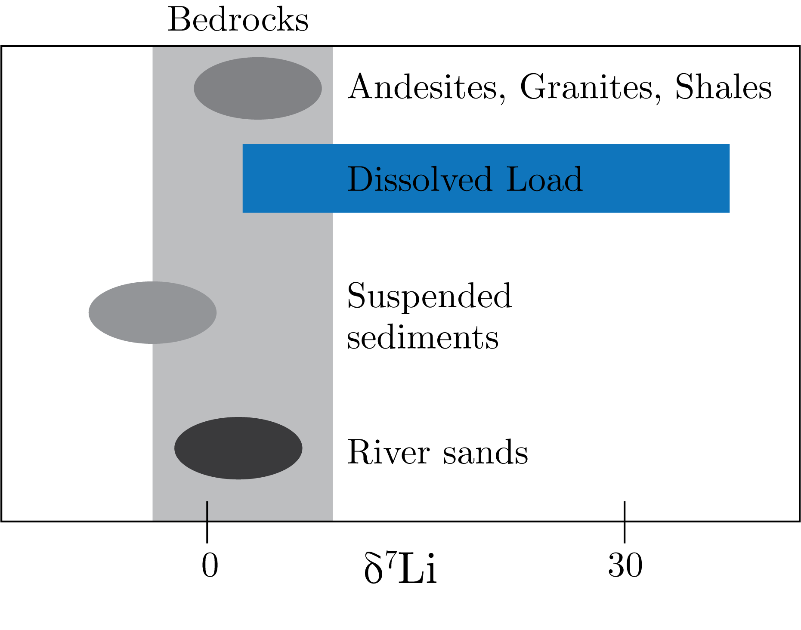

We discuss the first two.
The history of using these is because these do not produce gaseous species, so we needed a new measurement technique.
This was traditionally Thermal Ionization Mass Spectrometry, when elements are drawn across a heated filament, for which there is a large fractionation which makes it tricky.
The solution was Inductively Coupled Plasma Mass Spectrometry, which makes an EM field that makes a plasma that ionizes the elements, which does not have the same fractionation.
It is usually an Ar plasma.
Many of these have interesting properties:
B has a high concentration in SW
Li goes into mineral latices (such as carbonates)
Mg, Ca are key elements in biogeochemical cycles (such as in carbonates and silicates)
K is one of the most important nutrients
Boron
It has two isotopes:
$^{10}$B is 19.9%
$^{11}$B is 80.1%
In seawater, the concentration is quite high and has two species:
B(OH)$_3$: boric acid
B(OH)$_4^-$: borate ion
These are are proxy for $pH$ and for $p\text{CO}_2$.
We can write the equilibrium as:
\begin{equation}
\text{B(OH)}_3 + \text{H}_2\text{O} \leftrightharpoons \text{B(OH)}_4^- + \text{H}^{+},
\end{equation}
where the equilibrium constant is:
\begin{equation}
K_a = \frac{\left[\text{B(OH)}_4^-\right]\left[\text{H}^{+}\right]}{\left[\text{B(OH)}_3\right]}.
\end{equation}
The corresponding $pKa$ is $-\log K_a$, which basically gives us the relative amount of the two two species is proportional to the $pH$.
Conveniently, the $pKa \simeq 8.6$, which is relatively close the seawater $pH$ which then means that the small changes in the seawater will affect the relative abundance of these species.
We can therefore write the relationship as:
\begin{equation}
\log \frac{\left[\text{B(OH)}_4^-\right]}{\left[\text{B(OH)}_3\right]} = pH - pKa.
\end{equation}
Now, we note that the boric acid is trigonal and borate ion is tetrahedral, therefore the isotope fractionation is going to be different.
We can write a mass balance equation for $R_i = ^{11}\text{B} / ^{10}\text{B}$ for $i$ the speciation in hydroxl ions, we get:
\begin{equation}
\left[\text{B}\right]_{sw}R_{sw} = \left[\text{B(OH)}_3\right]R_3 + \left[\text{B(OH)}_4^-\right]R_4.
\end{equation}
We also know $\alpha_{3/ 4}$ is experimentally constrained.
To use this, we take advantage of the fact that the borate ion goes into carbonates, as well as the fact that we know the fractionation as well as the $pKa$.
We additionally note that the residence time of B in seawater is 10 to 20 [Myr], which means that over time frames less than this, we have that $\delta^{11}\text{B}_{sw}$ is constant, i.e. it is equal to modern values over this timeframe.
Therefore, if we measure $\delta^{11}$B$_{carbonates} \simeq \delta^{11}$B$_{\text{B(OH)}_4^-}$, which along with the fractionation factor we can get $\delta^{11}$B$_{\text{B(OH)}_3}$.
Thus, we can get from the above equation the difference of $pH$ and $pKa$ .
This all then means that if we know the solubility coefficient, we can get get $p\text{CO}_2$ reconstructions from solid carbon records through time, which often serve as a tie breaker against other proxies.
This is presented in Fig. 1. 1:

Fig. 1: The boron proxy in play.
Lithium
There are two isotopes:
$^{6}$Li which is 7.5%
$^{7}$Li which is 92.5%
and we note that the there was a reverse convention to report the light over heavy of the isotope originally.
The relative mass difference is large, at about:
\begin{equation}
\frac{\Delta m}{m} \simeq 0.14,
\end{equation}
which allows for large isotope fractionation to arise.
It substitutes for Mg, Fe, and Al in latices, which means it is a member of minerals.
The application has been using it for chemical weathering, despite the fact that there is little to no fractionation during weathering (dissolution).
Despite this, it was found that the dissolved load has a much higher and greater spread than the rocks from which they derive.

Fig. 2: Dissolved loads have a huge spread of lithium, contrasted against the rocks that it derives from.
This is because Li goes into the mineral lattice during second clay formation, which is preferentially included, which fractionation during weathering.
Experiments have shown that with increasing temperature, there is a decrease in fractionation, which is expected from the theory.
However, at low temperatures there is a large fractionation factor, at which the formation of clays occur.
We can image the following model:
\begin{equation}
\delta^{7}\text{Li}_R \underset{\epsilon\sim 0, \:\alpha\sim 1}{\longrightarrow } \delta^7\text{Li}_D \underset{\epsilon\sim 17}{\longrightarrow } \text{Li}_C.
\end{equation}
However, we also note that there is a branching at the second step, to which lithium can also remain dissolved.
This is what we can measure.
So, we bring back out fractional remaining, defined as:
\begin{equation}
f = \frac{F_D}{F_C + F_D} = \frac{F_D}{F_0}.
\end{equation}
We go now into Rayleigh distillation versus the batch model.
Batch Model
Here we have a closed system, in which the dissolved minerals can reabsorb.
We define:
\begin{equation}
F_0\delta_0 = F_C\delta_C + F_D\delta_D,
\end{equation}
and also:
\begin{equation}
\Delta_{C / D} = \delta_C - \delta_D \sim 10^3\log\alpha_{C/D},
\end{equation}
this is also equivalent to $\epsilon$ that we have been using.
Therefore, we can get:
\begin{equation}
\delta_0 = (1-f)\delta_C + f\delta_D
\end{equation}
which leads to:
\begin{equation}
f\delta_D = \delta_0 - (1-f)\left( \Delta_{C /D} + \delta_D \right).
\end{equation}
Thus, we get:
\begin{equation}
\delta_{D} = \delta_0 - (1 - f)\Delta_{ C / D}.
\end{equation}
This then means that we can get the difference between the dissolved load and the total lithium as a function of the fractional abundance remaining.
Rayleigh Model
Now, the difference here is that the dissolved load is taken away from the reaction.
The model is then:
\begin{equation}
\delta_D = \delta_0 + \log f \Delta_{C / D}.
\end{equation}
We can do some asymptotic analysis that as $f\to 1$ we get that all Li remains in the solution.
We can also see that $f\to 0$ that all Li is in the clays.
So, for $\delta_D - \delta_0 \simeq \Delta_{C / D}$ we can use the batch model and for $\delta_D - \delta_O \gg \Delta_{C / D}$ we would use the Rayleigh model.
This then allows us to see what major processes are happening in nature.